強力器材設備列表
Equipments of Megaforce StudioConsole
在聲音製作大量數位化的時代，我們總可以看到各式處理聲音的軟體效果器出現。儘管如此，我們相信類比線路的溫度還是難以被冷冰冰的計算取代。我們擁有製作出無數白金唱片的SSL4000G Plus 系列大型類比控台，也有SSL頂級9000J 系列控台，不管是錄音或是混音，讓你從打開控台的那一刻就是好聲音。Solid-State Logic SL-4064G Plus SE
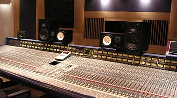
The SSL 4000 G-Series are the most popular among mixing engineers in Rock and Pop genres. Notable mixing engineers using the 4000-Series are Bob Clearmountain, Chris Lord-Alge, Tom Lord-Alge, Andy Wallace, Mark "Spike" Stent, Will Schillinger and Alan Moulder. SSL claim that the 4000 has been the mixer behind more platinum selling albums than all other consoles combined.Solid-State Logic SL-9064J Series
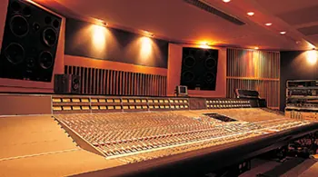
The 9000 J series have been widely acclaimed for use in R&B, Classical and Pop genres. Wyclef Jean, formerly of the Fugees, has equipped his Platinum Sound studio with two control rooms, one of them was the famous J-series.Sony MXP-3036
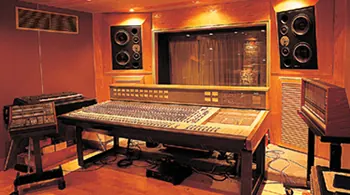
The MXP-3000 series console is a versatile, in-line, professional mixing console which is intended for use in recording or broadcast applications. The console design provides maximum flexibility, and allows the user to select the exact configuration that best meets his/her needs.Monitors
要建立一個有效的溝通，就必須有完善的表達和理解。在聲音工程中，監聽喇叭就是作品的嘴，碰上上工程師靈敏的耳朵，一來一往製作出最完美的聲音。我們擁有歐美錄音室設計大師 Andy Munro先生所設計的良好聲學環境，搭配多款喇叭來監聽，不管是成音、配音或音樂製作，都能清楚聽到聲音中的每一個細節。YAMAHA NS-10M Studio
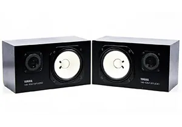
The Yamaha NS-10M Studio is a loudspeaker that became a standard nearfield studio monitor in the music industry among rock and pop recording engineers. Originally launched in 1978 as the NS-10 speaker, it started life as a bookshelf speaker destined for the domestic environment. It was poorly received but eventually became a valuable tool with which to mix rock recordings. The speaker has a characteristic white-coloured mid–bass drive unit. It was said to have a harsh treble response. Yamaha responded to this by redesigning the crossover and tweeter to give a smoother treble response. At the same time the company altered the front-baffle logo so that it was legible when the speaker was placed horizontally, the generally preferred method of use. This tweaked design, known as the NS-10M StudioGenelec 1031A
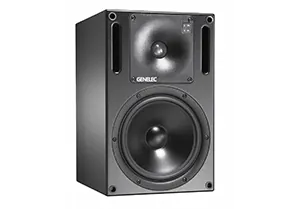
The Genelec 1031A is a two-way active monitor system, consisting of a vented enclosure with a multiple amplifier unit set into the back. The amplifier unit contains a low signal level active crossover, two power amplifiers and overload protection for each driver. This design provides high output, low coloration and broad bandwidth. The system's excellent dispersion and precise imaging together with its compact size make it ideal for near field monitoring, broadcast and TV control rooms, mobile vans, home studios and travelling engineers.Dynaudio M3
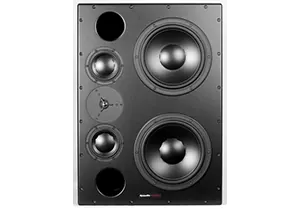
The drivers of the Dynaudio M3 are ferrofluid cooled, a benefit only made possible on low frequency drivers by the use of custom designed ferrofluid compounds applied to very tightly tolerated voice coil gabs - a feature absolutely unique to Dynaudio Acoustics. The result is a very clean, dynamic and powerful speaker in which common problems, such as cone break up, thermal compression and phase misalignment have been almost eliminated. Frequency response is full and flat, and the overall transparency of sound leaves no doubt that the M3 truly advances the art of monitoring at high levels without sacrificing quality at more relaxing volume. Levels from 85 to 120dBA exhibit essentially identical timbre allowing total confidence in mix decisions regardless of monitoring level.Dynaudio M4
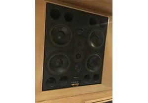
資料待更新...Microphone
若說監聽喇叭是作品的嘴巴，那麥克風就是作品的耳朵了。想要你的作品溫柔一點，那就讓他用溫柔的耳朵聽；希望作品力道多一點，就找隻兇悍的麥克風吧。強力錄音室收藏了各式麥克風，從經典到現代，需要什麼樣的聲音，我們應有盡有。Neumann U 47 Fet i
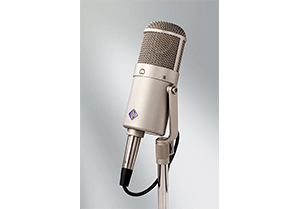
The Neumann U47 FET Collector's Edition brings the epic sound of one of the most recorded microphones in history into your studio. Neumann went back to the schematics and production notes from the original U47 FET to bring you the wide dynamic range, detailed sound, and fast transient response of the original.Neumann U 67
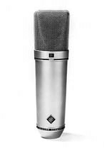
The Neumann U 67 is a developed multi-purpose studio microphone. It has an attractive shape and possesses first-class transmission properties and a number of new advantages. The U 67 can be used in a multitude of cases in recording, brocasting and sound reproduction.Neumann U 87 Ai
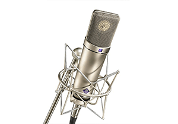
The Neumann U 87 Ai is the modern incarnation of a classic microphone. Introduced in 1967, the U 87 gained instant favor with engineers, producers, and their clients; by the mid '70s it was a staple in every world-class recording studio. And it still is. Walk into a session, and you'll see 87s everywhere. On piano, vocals, toms, overheads, guitar cabs, brass, strings, congas — you name it. The mic's popularity is easy to understand: it ushered in a new era of audio fidelity and reliability, and with three selectable polar patterns (cardioid, omnidirectional, and figure-8), plus a switchable highpass filter and 10dB pre-attenuation pad, the mic is incredibly versatile, and an ideal choice for a broad range of recording techniques. The Neumann U 87 Ai is the industry-standard large-diaphragm condenser mic.Neumann KM 84
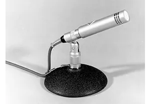
The Neumann KM 84 is a small-diaphragm FET condenser with a fixed Cardioid pickup pattern. Known for having an exceptionally flat frequency response and its ability to maintain its cardioid pickup pattern across the frequency spectrum. It was also the world’s first phantom-powered microphone, built to run on 48v DC. It's design goal was to be as small as possible; the model name ‘KM’ stands for Kleine Mikrofon (“small microphone”)Neumann KM 184
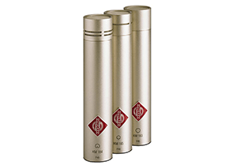
The Neumann KM 184 is a transformerless FET pencil condenser mic. Part of Neumann’s “Series 180” mics, it has a cardioid pickup pattern; Need a microphone to record percussion, cymbals or brass instruments? The KM184 is capable of handling high sound pressure levels with ease - as high as 138dB before overloading. But it's also extremely quiet, making it an excellent choice for capturing the subtle nuances of acoustic guitars and orchestral instruments.Neumann TLM 103
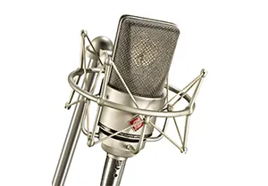
The Neumann TLM 103 large-diaphragm cardioid condenser mic boasts a capsule drawn from the U 87 and transformerless circuitry - not to mention classic Neumann sound! The TLM 103 is a great mic for any pro or project studio use and, due to its minimal self-noise, it's been used for classical recordings with a wide dynamic range, sampling (especially for very low amplitude sources), and Foley work. This mic is also robust enough for the live stage, as Jack White has employed the TLM 103 to mic amps in live situations.Neumann M-149
The perfect combination of vintage sound and modern technology, the M 149 Tube is the first tube mic designed by Neumann in over 30 years. Based on the classic U 47, the M 149 gives you unmistakable tube warmth that audiences love. At the same time, you get the clarity and precision of a modern capsule. It has the lowest self-noise of any tube microphone on the market. The M 149 Tube will add true flexibility to your recordings with nine polar patterns to choose from and a 7-position highpass filter.
Sony C-800G
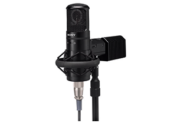
The Sony C-800G a high-end tube vocal microphone. The mic was made popular for pop and R&B production by users like Dr. Dre, Mariah Carey, R. Kelly, Kelly Clarkson and many others. It captures the silky breathiness of vocals without a hint of shrillness. It's also a revelation on acoustic guitar. In fact, the C-800G's effectively non-existent noise floor and high sensitivity let you use it on almost anything with astonishing results. The vacuum tube — a hand-selected 6AU6 — has its own onboard cooling system. The large dual diaphragm capsule features electronically selectable cardioid and omnidirectional polar patterns.Audio-Technica AT4033
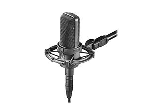
The AT4033 has been producing great results for over 20 years. Its fast response, low noise, and strong up-front sound have made it a studio standard for everything from brass instruments, vocals, acoustic guitars, stringed instruments, loud electric guitar amps, and anything else. It's well known for offering stellar performance for bluegrass as well. It really can be used for almost anything.AKG C414 B-ULS
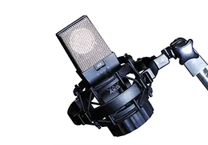
The AKG C414 B-ULS is The reference microphone for almost all comparative microphone tests and one of the most used condenser microphones in the world. It is the microphone of choice for miking up vocals, grand pianos, percussions, and any other sound sources with complex waveforms. A gold-sputtered 1-inch dual-diaphragm and Ultra Linear Series electronics combine to provide an extremely smooth frequency response.AKG D112
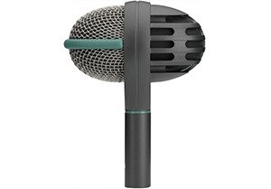
The D112 has earned a well-deserved reputation worldwide as the best kick drum microphone ever made. Heavy-footed drummers are thrilled with the D112´s ability to handle up to 160dB SPL without any distortion. The diaphragm has a very low resonance frequency to maintain a solid and powerful response below 100Hz. A narrow band presence boost at 4kHz punches through dense mixes with forceful impact - no additional EQ needed!Shure SM7a
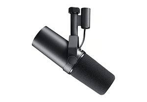
The Model SM7A is a dynamic microphone with a very smooth, flat, wide-range frequency response. It is meticulously designed for the most exacting music and speech requirements in professional audio applications. The cartridge is designed for excellent shielding against electromagnetic hum generated by computer monitors, neon lights, and other electrical devices.Shure SM57
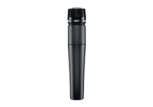
The legendary Shure SM57 is exceptional for musical instrument pickup and vocals. With its bright, clean sound and contoured frequency response, the SM57 is ideal for live sound reinforcement and recording. The SM57 has an extremely effective cardioid pickup pattern that isolates the main sound source while minimizing background noise. In the studio, it is excellent for recording drums, guitar, and woodwinds. Outstanding performance, reliability, and application diversity make this "workhorse" the choice of performers, producers, and sound engineers worldwide.Shure Beta52
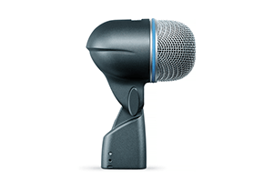
The Shure Beta52 is a high output dynamic microphone with a tailored frequency response designed specifically for kick drums and other bass instruments. It provides superb attack and "punch", and delivers studio quality sound even at extremely high sound pressure levels.Senheiser MD421
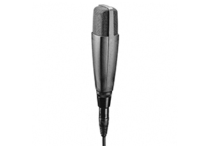
The Senheiser MD421 has a 5-position bass roll-off switch. The “flat” position is marked M for Music; the other extreme is marked “S” for Speech, and cuts the low end by approximately 6dB below 500 Hz. Three intermediate positions are provided. It is an extremely versatile, robust legendary cardioid microphone. Easy handling due to pronounced directivity. Clear sound reproduction for most recording conditions and broadcasting applications.